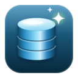

SQL Formatter
輸入 SQL 語句
0 行 · 0 字元
大小寫：原樣
關鍵字大寫
關鍵字小寫
縮排 2 格
縮排 4 格
縮排 Tab
Standard SQL
MySQL
MariaDB
PostgreSQL
BigQuery
T-SQL (SQL Server)
Spark SQL
HiveQL
SQLite
Snowflake
Redshift
Format SQL
⌘↵
▾
保留註解
移除註解
Minify
▾
保留註解
移除註解
MyBatis
▾
保留註解
移除註解
範例
匯入檔案
分享連結
清空
formatted.sql
複製文字
下載檔案
▾
下載 .sql
下載 .txt
回填輸入
匯出圖片
▾
下載 PNG
複製圖片至剪貼簿
複製 Base64
Standard SQL